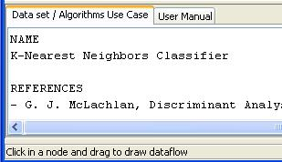
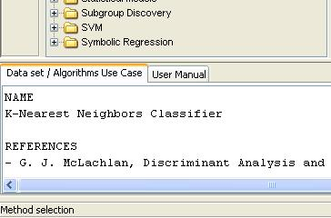
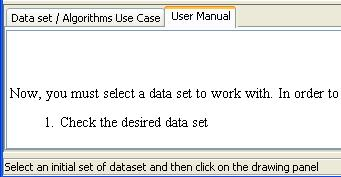

Status bar
The status bar is a simple way to provide the user useful information during the generation of experiments.
It is located at the bottom of the window. Here it will appear information about the action being carried out, helping the user to understand the meaning of each command or button. Several examples are shown below:


